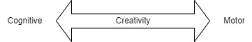
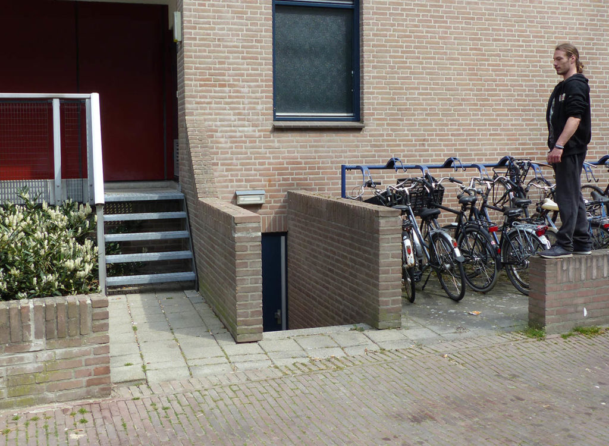

We tend to think of creativity as the generation or apparition of new ideas, which can then be put into action. I call this “ideation”. This view of creativity is probably so strong because we take our paradigmatic examples of creativity in specific domains like scientific or technological innovation, writing novels or creating music. But when we focus on activities that are not usually framed as being purely intellectual, like parkour, this two step process, inventing ideas in your head, then applying them to the world, might not work that well. It misses the tight link between action and perception, the direct interaction of the body and the environment.
Here, I want to pursue this line of thinking, which is very relevant for teaching creativity in sports and physical activities. I will argue that we need to move a few steps away from the ideation approach if we want to understand motor creativity. Using the frameworks of ecological-dynamics, we can understand how using constraints can benefit creativity. In part 2, I will explore a few methods and principles to promote the emergence of creative motor solutions.
Cognitive and motor creativity #
In a blog post, Philipp Holzmüller[1] showed that creativity in parkour is not only about coming up with new moves or finding a solution to a challenge (how do I climb here ?), but also in setting up the challenge for yourself (let’s try to climb here), and even in identifying the right location to train in the first place. In that sense, creativity happens at different levels. We could think of it as a spectrum, ranging from cognitive to motor creativity. Setting yourself some new and interesting challenges would be at the cognitive end, and developing new patterns of movement that help solve these challenges would be at the motor end. This spectrum is useful for a start, but we must be careful with it. I’m sure most of us don’t always sit down with pen and paper, thinking hard and taking notes on what challenges we want to invent; rather, it is often the environment that suggests challenges: this wall feels climbable, let’s try to climb it. There is always more interaction between the body and the environment that this clean spectrum suggests. And we should avoid making a strict dichotomy between pure thinking (cognition) and pure behaviour: moving our bodies is arguably cognitive. But thinking of this spectrum is a useful start, and will come handy in the next section.

So that being said, what is motor creativity ? Orth et al. give a definition that is very useful for our purposes: motor creativity is the capacity to develop new functional behaviours, and/or to act in functional ways in novel situations[2]. The “novelty” part of the definition can be relative to the individual, or to a group[3]. So being creative in parkour could mean finding a new pattern of movement that allows me to overcome an obstacle; and “new” could mean that I never used it, or that nobody in my local community has ever done that. But it could also mean using that pattern in an environment I am not familiar with, for example trying a kong on a rail instead of the walls I usually train on. So here creativity is not necessarily measured by the apparition of new ideas, but with new behaviours or the adaptation of behaviour to new environments. To clarify, this definition moves us away from the act of Creation with a big C, to the simple apparition of statistically rare patterns of movement.

What else than a kong ? (picture by Pawel van der Steen)
This is useful, because it allows for a less top-down approach. Instead of ideas prescribing movement, like a boss giving orders, we can use the more bottom-up approach from ecological-dynamics, where movement is self-organized. Sure, we set goals and intentions ourselves, but movement patterns emerge from the interaction of the body and the environment. Therefore, new movement patterns can arise when there are changes in the configuration of constraints from the body, the environment or the task. And if that is the case, teachers have a powerful methodological tool to foster the emergence of creative solutions: the manipulation of constraints.
Constraints and creativity #
At a first glance, creativity and constraint might seem antinomic. We think of creativity as being “free”: obeying orders, following rules, applying a plan, repeating an action or imitating somebody else are not cases that we usually call “being creative”. From that perspective, it is not immediately obvious that creativity is a skill that can be taught. Maybe with experience, you can become creative, but it doesn’t seem to be something that you can transfer from person to person as easily as “knowledge” or “rules”. Think of the “stroke of genius” paradigm: creativity is just ideas coming from… nowhere ? But the CLA takes us away from the generation of ideas to focus on the emergence of new behaviours; and will explain this emergence by the interaction of the different constraints of the situation[4]. And in this paradigm, constraints are not only limiting, but also enabling. They shape and guide the self-organisation of movement.
Of course, using constraints for creativity is not something new, in fact there is a long tradition of constrained creative endeavours. We could examine the multiple forms of constrained writing, the most obvious one being poetry, with its use of structures and patterns. Constraints are sometimes explicitly used as engines for creativity and imagination like in the OuLiPo (“ouvroir de littérature potentielle”) group. The most famous example is probably George Perec’s La Disparition, written without using the letter “e”. And constraints probably appear everywhere in less systematic and explicit manners. Umberto Eco says that before writing The Name of the Rose, he had notes on all of the monks of his fictitious monastery, even those he would never mention in the book. The story that would emerge was already constrained by these imaginary characters.
Let’s get closer to what interests us here: creativity in movement. Starting with dance is probably a good idea, because it is more obviously a creative endeavour than most sports. Even in dance, numerous examples of constraints can be given, like the structure of the music. But the most interesting examples are when choreographers use constraints in a systematic fashion, like some of Merce Cunningham’s methods, who used to throw dice or coins to construct sequences of movements. To be fair, it might seem like this is not a matter of creativity after all. Throwing a dice can take care of the sequence of movements, but somebody still had to come up with the individual movement patterns. But now take two dice, say one for each arm. Sure, you need to input something (a movement pattern, a direction, etc.) for each number of the dice. But new patterns of movement will emerge from the random combinations of left and right arm. In some cases, they might even seem impossible to execute in a straightforward fashion, and will require experimentation and push the self-organisation of the dancers in new directions. Cunningham said that "if a dancer tells me that something won't work, I say, Try it; if you fall down, you'll find something about falling down"[5].
In a sense, these methods allow to displace ideation, to move between the different levels of creativity: you need to have the idea of setting up constraints, like using randomness for creative purposes in the first place, but after that it’s not a matter of coming up in your mind with the sequence of movement. Once the dice is thrown, you have to go with it: alea jacta est. Randomness and self-organisation take care of the motor aspect of creativity. I can’t go into all the factors that make constraints useful for creativity. There certainly is a motivational aspect: seeking to satisfy these constraints sets an interesting challenge for yourself. They also restrict the state-space, creating problems that are better defined and easier to answer[6]. In this way, they help solve the degrees of freedom problem: your body can move in a potential infinity of ways, but this is not the case when faced with a specific environment and a goal to attain; the constraints do some of the work of “selecting” which patterns of movement are used. And as we’ve seen, constraints can also push us away from obvious solutions, confronting us to new situations, forcing experimentation and adaptation.
Finally, two concepts seem important to help us think about motor creativity: affordances and attractors. Affordances are the opportunities for movement offered by the environment: a chair affords sitting, a handle affords gripping, etc. A good deal of creativity comes from discovering these affordances, like finding out that you can use a rebound instead of a direct shot or that a wall is climbable. Attractors are the stable patterns of movement in a given situation, like running on a fast treadmill or walking on a slower one. If an attractor is strong, all behaviour will tend to gravitate towards it, and there will be low variability of movement. For example, if you feel very comfortable with one kind of movement, you will tend to always use that technique, and not explore other solutions. With those concepts in mind, the question of creativity becomes: how can we discover and use diverse affordances ? and how can we move away from strong attractors in order to get more variable movement ? These are questions I want to answer in the second part, while suggesting different concrete ways of teaching creativity.
https://thoseguysparkour.wordpress.com/2020/01/19/parkour-the-art-of-finding-problems/ ↩︎
Orth Dominic, Kamp John van der, Memmert Daniel et al., « Creative Motor Actions As Emerging from Movement Variability », Frontiers in Psychology 8, 2017. ↩︎
Ibid. ↩︎
Ibid. ↩︎
Cohan Robert P., Vaughan David et Cunningham Merce (éds), Merce Cunningham: creative elements, 2. printing, New York, NY, Harwood Academic Publishers, 1999 (Choreography and dance). ↩︎
Warburton Edward, « Imagine the (Im)possibilities: The Role of Constraints on Dance Creativity », Dance: Current Selected Research, 2018. ↩︎